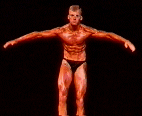
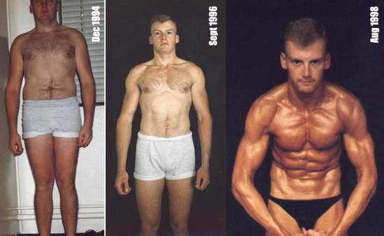

Contact Us

About
Mountain Bike Tokyo's Creator
Robert L. Lounsbury, Jr.
16 August 1998
All my young life I was the chunky kid. I was always teased and poked at while going to school on the school bus and at recess. My Mom always said "If you don't change you're going to look like your uncle." He was about 350lbs of rolling fat and of course I didn't want to be like that, but I didn't know how to change.
Well, the years passed, I went into the US Air Force, lost some weight at basic, gained it back at my first duty station, at which point I was very unhappy with my appearance. My second assignment took me to RAF Croughton, England, where we were allowed to go to the gym at the end of the day if the work load permitted. So, I got into step aerobics, stopped eating fast food, and lost about 35lbs in just two months (December 1994 - February 1995). I became a connoisseur of health and fitness, reading everything I could get my hands on dealing with weight lifting and diet. My favorite book is The Zone by, Barry Sears. Dr. Sears conveys the importance of eating several small, balance meals, on a foundation of water as opposed to breads, rice, cereal, and pasta recommended by the FDA. Although I did not loose my initial weight by following this lifestyle, I have been following it exclusively since 1996 and credit it for keeping me at an average 9% body fat at any given time. I also believe that it is this lifestyle that keeps me healthy and out of the doctor's office all year long. Oh, and of course I hit the gym 4 to 5 times a week. Give it an honest try for three months and I bet it will become your lifestyle too!

So what does all this have to do with mountain biking, you ask? Everyone looks at me and says, "You must be a runner." Actually, I hate running, but I love mountain biking! Mountain biking is my release and without the rigorous lifestyle I follow I would not be able to perform at my best. Besides, there's nothing like the satisfaction of flying down some gnarly single track on the verge of biting it and to do it, you've got to be at your best. §
L8R,
Rob
Shut up and ride!
|
Home |
Courses |
Rental |
Tours |
Action |
Adventurers |
Ride Area |
Links |
| [ Home | Courses | Rental | Tours | Action | Adventurers | Ride Area | Links | Text | About ] | |||||||